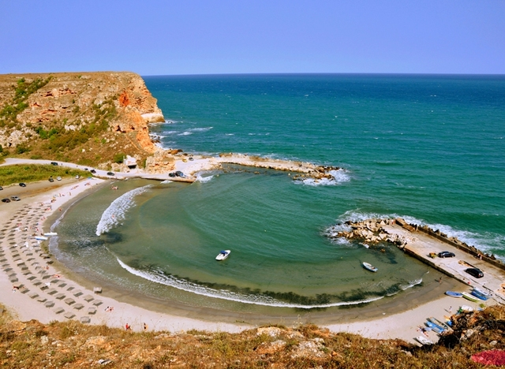
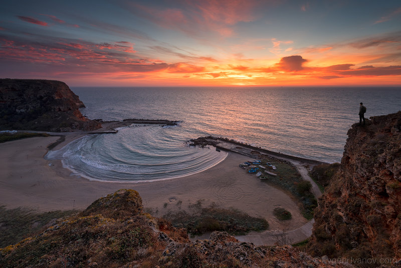
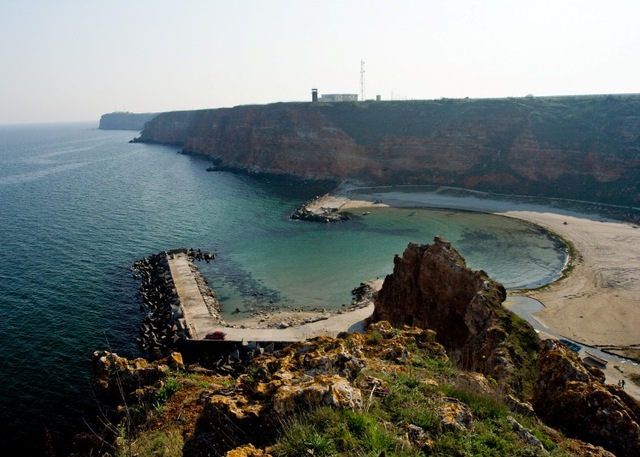

Кой не е чувал и не знае, къде се намира залив Болата. Един от най-красивите ни и защитени заливи, който е част от резерват „Калиакра“.
Морски води, чисти като кристал и заобикалящ фин пясък - това е изключителният залив Болата, който не напразно е един от членовете за най-красиви заливи в света. Именно заради точно това признание залив Болата и фантастичния плаж към него набират все повече популярност и биват посещавани от много хора, искащи да зърнат или просто да се полюбуват на това невероятно място.
Малкият залив, криещ в себе си чист пясък и красиви морски гледки. Навсякъде около него се простират червени скали с издълбани в тях пещери, впечатляващо, нали!? През Болата протича къса рекичка, в която се вливат многобройни извори. Там, където се вливат се и образува малкото устие на лагуна, което толкова впечатлява посетителите. Заливът е едно от най-добрите места за гмуркане, защото предразполага напълно любителите на това занимание. А, знаете ли, че всъщност това е единственият резерват в България, който в своите предели включва и акватория (земна площ).
